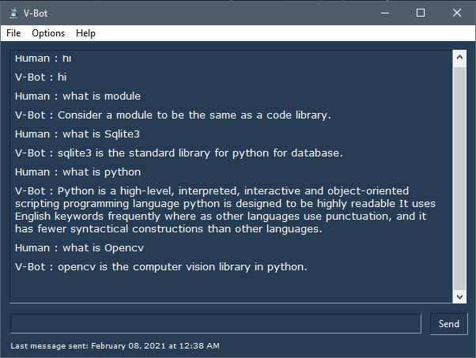

ChatBot
Introduction
A chatbot (also known as a talkbot, chatterbot, Bot, IM bot, interactive agent, or Artificial Conversational) is an intelligent piece of software that is capable of communicating and performing actions similar to a human. .Such programs are often designed to convincingly simulate how a human would behave as a conversational partner, thereby passing the Turing test. Chatbots are typically used in dialog systems for various practical purposes including customer service or information acquisition.
Chatbots are hot today. Who doesn't know about them? Chatbots are seen as the future way of interacting with your customers, employees and all other people out there you want to talk to. The essence is that this communication is a dialogue. Contrary to just publishing the information, people who use a chatbot can get to the information they desire more directly by asking questions.
What do Chatbots do?
Chatbots are relevant because of the following reasons:
They make available to people, the right information at the right time, right place and most importantly only when they want.
About 90% of our time on mobile is spent on email and messaging platforms. So it makes sense to engage customers using chatbots instead of diverting them to a website or a mobile app.
The advancements in artificial intelligence, machine learning, and natural language processing, allowing bots to converse more and more, like real people.
With chatbots, firms can be available 24/7 to users and visitors. Now, the sales and customer service teams can focus on more complex tasks while the chatbot guides people down the funnel.
Modern chatbots do not rely solely on text, and will often show useful cards, images, links, and forms, providing an app-like experience.
Depending on way bots are programmed, we can categorize them into two variants of chatbots: Rule-Based (dumb bots) & Self Learning (smart bots).
Rule-Based Chatbots:
This variety of bots answer questions based on some simple rules that they are trained on.
Self-Learning Chatbots:
This variety of bots rely on Artificial Intelligence(AI) & Machine Learning(MI) technologies to converse with users.
Self-learning Chatbots are further divided into Retrieval based and Generative.
Retrieval based
Retrieval based bots work on the principle of directed flows or graphs.The bot is trained to rank the best response from a finite set of predefined responses. The responses here are entered manually, or based on a knowledge base of pre-existing information.
Eg. What are your store timings?
Answer: 9 to 5 pm
These systems can be extended to integrate with 3rd Party systems as well.
Eg. Where is my order?
Answer: It’s on its way and should reach you in 10 mins
Retrieval based bots are the most common types of chatbots that you see today. They allow bot developers and UX to control the experience and match it to the expectations of our customers. They work best for goal-oriented bots in customer support, lead generation and feedback. We can decide the tone of the bot, and design the experience, keeping in mind the customer’s brand and reputation.
Generative
Another method of building chatbots is using a generative model. These chatbots are not built with predefined responses. Instead, they are trained using a large number of previous conversations, based upon which responses to the user are generated. They require a very large amount of conversational data to train.
Generative models are good for conversational chatbots with whom the user is simply looking to exchange banter. These models will virtually always have a response ready for you. However, in many cases, the responses might be arbitrary and not make a lot of sense to you. The chatbot is also prone to generating answers with incorrect grammar and syntax.
Chatbot building
There are a few things you need to know before moving forward. Natural Language Processing(NLP) using NLTK, TF-IDF and Cosine similarity.
Natural Language Processing(NLP) using NLTK
Natural language processing (NLP) is the ability of a computer program to understand human language as it is spoken. NLP is a component of artificial intelligence (AI).
The development of NLP applications is challenging because computers traditionally require humans to “speak” to them in a programming language that is precise, unambiguous and highly structured, or through a limited number of clearly enunciated voice commands. Human speech, however, is not always precise — it is often ambiguous and the linguistic structure can depend on many complex variables, including slang, regional dialects, and social context.
Natural Language Toolkit(NLTK)
NLTK is a leading platform for building Python programs to work with human language data. It provides easy-to-use interfaces to over 50 corpora and lexical resources such as WordNet, along with a suite of text processing libraries for classification, tokenization, stemming, tagging, parsing, and semantic reasoning, wrappers for industrial-strength NLP libraries, and an active discussion forum.
TF-IDF
We will compute the Term Frequency-Inverse Document Frequency (TF-IDF) vectors for each document. This will give you a matrix where each column represents a word in the overview vocabulary (all the words that appear in at least one document).
TF-IDF is the statistical method of evaluating the significance of a word in a given document.
TF — Term frequency(tf) refers to how many times a given term appears in a document.
IDF — Inverse document frequency(idf) measures the weight of the word in the document, i.e if the word is common or rare in the entire document.
The TF-IDF intuition follows that the terms that appear frequently in a document are less important than terms that rarely appear.
Cosine similarity
Fortunately, scikit-learn gives you a built-in TfIdfVectorizer class that produces the TF-IDF matrix quite easily.
Now we have this matrix, we can easily compute a similarity score. There are several options to do this; such as the Euclidean, the Pearson, and the cosine similarity scores. Again, there is no right answer to which score is the best.
We will be using the cosine similarity to calculate a numeric quantity that denotes the similarity between the two words. You use the cosine similarity score since it is independent of magnitude and is relatively easy and fast to calculate (especially when used in conjunction with TF-IDF scores). Mathematically, it is defined as follows:
Since we have used the TF-IDF vectorizer, calculating the dot product will directly give us the cosine similarity score. Therefore, we will use sklearn's linear_kernel() instead of cosine_similarities() since it is faster.
Let's start coding…
So we’ll copy data from this website or download by clicking
Source Code
Copy and paste the whole data in a text format. We’ll train our model based on this data and then check how well the model performs. Apart from this, I have also included Wikipedia python library so you can ask anything.
bot.py
Screenshots of conversation with Chatterbot:

That was pretty cool, isn't it? Though the results were not precise at least we reached a milestone :)
Conclusion: The future of chatbots
The future of Chatbots is very bright. With so much advancement in the Artificial Intelligence sector, chatbots are the future with zero doubt. The current chatbot that we just built is obviously not the future I am talking about as this is just a stepping stone in chatbot building.
The future chatbot will not be just a Customer Support agent, it will be an advance assistant for both the business and consumer.
We as humans are not fond of doing repetitive boring tasks. So in the future companies will hire AI Chatbot for the tasks which are repetitive and don’t require creativity. With AI Chatbot taking over repetitive boring tasks, Companies will utilize their human resources for more creative tasks. With this, we can expect more amazing things coming up to us in the future.
Also, Human doesn’t like storing up contents (mugging up) in their mind. And today with the Internet they can leverage that part. So tasks that require storing the information (data) can be transferred to AI Chatbot.
Well, that's all for this article hope you guys have enjoyed reading this it, feel free to share your comments/thoughts/feedback in the comment section.
Thanks for reading!!!